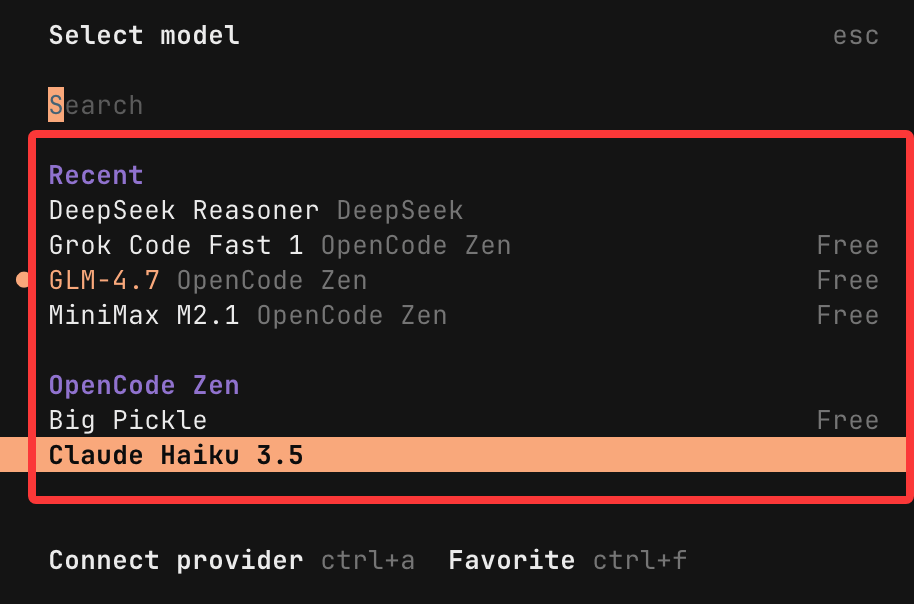
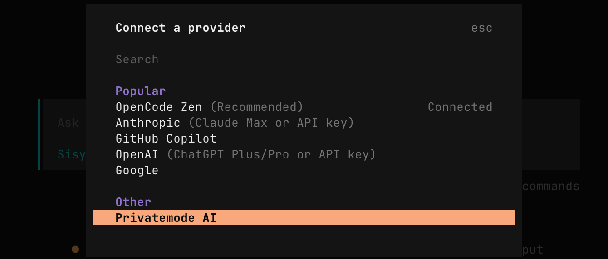
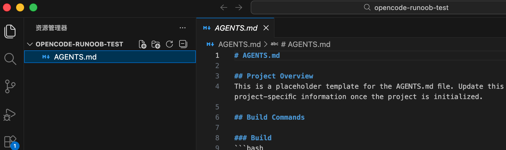
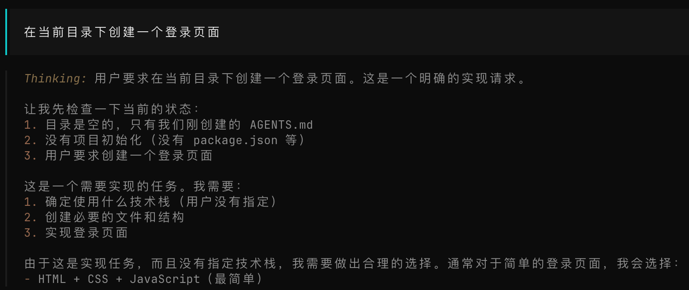

OpenCode Getting Started Tutorial
OpenCode is an open-source AI coding agent that supports interacting with AI in the terminal, desktop applications, and mainstream IDEs (such as VS Code) to complete code-related tasks.
OpenCode can help us understand codebases, write new features, refactor code, fix bugs, and more, greatly improving development efficiency.
OpenCode is similar to Claude's Code mode or Cursor's Agent feature, but it is fully open-source, privacy-first, supports multiple large language models (LLMs), and emphasizes the terminal experience.
OpenCode supports 75+ model providers, includes built-in free models such as GLM-4.7 and MiniMax M2.1, can connect to commercial models from OpenAI, Anthropic, Google, etc., and can also configure local models (such as Llama 3), adapting to different scenarios such as lightweight scripts and complex architectures as needed.
For the complete OpenCode tutorial, see:https://www.runoob.com/opencode/opencode-tutorial.html

Key Features
Two built-in agent modes:
- Build mode:Full permissions, can directly edit files and execute commands.
- Plan mode:Read-only planning, editing is denied by default and requires confirmation.
Toolset:bash execution, file read/write, grep search, LSP diagnostics, etc.
Context awareness:Automatically analyzes project structure and generates AGENTS.md guidelines.
Sharing and collaboration:Generate a session share link with one click.
Install OpenCode
OpenCode supports installation on macOS / Windows / Linux multiple platforms.
Universal one-click installation script — this is the simplest method:
curl -fsSL https://opencode.ai/install | bash
After installation, you should be able to run it from the command line:
opencode --version
If the output is similar to1.1.19version information like this, the installation was successful.
Install via Package Manager
macOS / Linux
brew install opencode
Or:
npm install -g opencode-ai
Windows
choco install opencode
Or:
scoop bucket add extras scoop install extras/opencode
Arch Linux
paru -S opencode-bin
OpenCode runs in the terminal. We can use the default terminal that comes with the system, or use some useful modern terminal tools:
Desktop App
OpenCode also provides a desktop application, which can be downloaded directly from thereleases page 或 opencode.ai/download.
| System Platform | Download Package |
|---|---|
| macOS (Apple Silicon) | opencode-desktop-darwin-aarch64.dmg |
| macOS (Intel) | opencode-desktop-darwin-x64.dmg |
| Windows | opencode-desktop-windows-x64.exe |
| Linux | .deb, .rpm, or AppImage formats |
Launch and Usage
To start OpenCode, simply enter the start command in the terminal:
opencode
The first launch will guide you through basic configuration:
- Model selection:A list of available models is displayed by default. You can directly select free models labeled Free (such as MiniMax M2.1, GLM-4.7) and use them without an API Key.
- Login options:You can choose to skip login and configure an API Key later when you need to connect commercial models. You can also log in with a Claude Code Pro account to use exclusive models.
After successful startup, you enter the TUI interface and can start using the core features.
We can type /models in the terminal to view available free models:

In the popup, the ones with the word Free on the right are free:

Configure API Keys and Models
If you want to connect an AI provider's API key, such as OpenAI or Anthropic Claude, run:
opencode auth login
Or after startup in the terminal, enter:
/connect
Select a model. Follow the prompts to log in and paste your API Key.

You can also use theZenmodel collection (high-quality models officially recommended and tested by OpenCode), saving you the trouble of managing multiple external accounts yourself.
If you no longer want to use it, you can exit with the following command:
/exit
Basic Usage
Start OpenCode
Enter the project directory you want to work on:
cd /path/to/your/project opencode
For example, let's create a directory opencode-runoob-test:
mkdir opencode-runoob-test cd opencode-runoob-test
Then run the command:
opencode
If there are permission issues, you can use:
sudo opencode
This will open OpenCode's terminal user interface (TUI).
Project Initialization
In the OpenCode interface, run:
/init

This will generate a .opencode/ folder for storing the project's vectorized index and custom instructions.
It will scan the code structure of the current directory and generate an AGENTS.md file for recording project information.

You can see the AGENTS.md file in the opencode-runoob-test directory:

Then we use natural language to describe your requirements and start a task:
在当前目录下创建一个登录页面
Next, the large model will start thinking and create the login page:

Generated files:

Ask Questions and Explain Code
You can directly ask OpenCode about codebase details in natural language:
What features does the file @index.html contain
where@@index.html is used to reference file paths in the project.

Everyday Interaction
- Ask directly: for example, "Explain the authentication logic in src/main.ts".
- Add features: describe the requirement, such as "Add a user registration API with email verification".
- Switch modes: Press the Tab key to switch between Plan/Build modes (Plan is safer and used for planning).
- Undo changes: /undo
- Redo: /redo
- Share session: /share
Interactive mode (scripted):
opencode -p "修复 login 函数中的 bug"
Introduction to Built-in Tools
OpenCode's AI Agent operates on the codebase through the following tools (where you can control permissionsopencode.jsonwith allow/deny/ask):
- bash: Execute shell commands (e.g.
git status、npm test）。 - write/edit/patch: Create/modify/patch files.
- read: Read file contents (supports line ranges).
- grep/glob/list: Search and list files (respects .gitignore).
- webfetch: Fetch web page content (for documentation).
- lsp(experimental): code navigation, hover hints, etc.
- question: Ask you for confirmation.
- todo: Maintain a task list.
Custom tools and MCP (Model Context Protocol) server support extensions (e.g., connecting to databases).
Advanced Usage
- Custom commands: In
~/.config/opencode/commands/create a Markdown file, such asprime-context.md, the content being preloaded instructions. - Theme and Keybindings: Customize appearance and shortcuts in settings.
- Multiple sessions: Run multiple agents at the same time to handle different tasks.
- IDE integration: Currently supports VS Code extension (search for OpenCode extension), or remote control via client/server architecture.
- Permission control: Set tools in the configuration file to
askmanually confirm sensitive operations.
Create a Simple Node.js API
- Create a new directory:
mkdir my-api && cd my-api - Initialize:
npm init -y - Start OpenCode:
opencode - Input
/init - Question: Create an Express.js service that supports the /hello route returning JSON { message: 'Hello World' }, and add a README.
oh-my-opencode
oh-my-opencode is a powerful plugin/extension layer designed for OpenCode (. It upgrades a single AI agent into a multi-agent collaborative team, providing advanced features out of the box.
GitHub repository:https://github.com/code-yeongyu/oh-my-opencode
Key highlights include:
- SisyphusMain agent: responsible for continuously executing complex tasks until completion.
- Supports parallel execution of specialized sub-agents (such as Oracle (Prophet), Librarian (Documentation Expert), Frontend Engineer, Explore (Explorer), etc.).
- Built-in LSP/AST tools (code refactoring), MCP (model invocation plugins, such as search, document retrieval), hook system (25+ event triggers).
- Multi-model scheduling: automatically assigns tasks to the most suitable model (e.g., Gemini for frontend, Claude for planning).
- Keyword triggers full automation (such as
ultrawork或ulw), supports background tasks, Todo enforcement, context injection, etc. - Fully compatible with Claude Code workflows, emphasizing high performance, automation, and customizability.
Installation
It is recommended to let OpenCode complete the installation automatically. Copy the following prompt and paste it into your OpenCode dialog:
按照以下说明安装和配置 oh-my-opencode： https://raw.githubusercontent.com/code-yeongyu/oh-my-opencode/refs/heads/master/docs/guide/installation.md
After installation, it works out of the box by default, and you can experience most features without additional configuration.
Basic Trigger
Add the keyword ultrawork (or its abbreviation ulw) to OpenCode's prompt, for example:
ultrawork: 请帮我实现一个 React 组件，支持暗黑模式。
This activates full mode: the Sisyphus main agent takes over, automatically assigns subtasks to specialized agents, and executes them in parallel (background codebase mapping, deep exploration, automatic refactoring, etc.) until the task is 100% complete.
OpenCode TUI Common Slash Commands Cheat Sheet
OpenCode's Slash commands (starting with/) are mainly used in the terminal user interface (TUI) to quickly control sessions, configuration, and operations.
Core Configuration and Initialization
| Command | Description | Alias/Shortcut |
|---|---|---|
/connect |
Add or configure LLM provider (API Key) | 无 |
/init |
Create or update projectAGENTS.mdfile (analyze the codebase) |
Ctrl+X I |
/models |
List available models and switch | Ctrl+X M |
Session Management
| Command | Description | Alias/Shortcut |
|---|---|---|
/new |
Start a new session (clear current) | /clear / Ctrl+X N |
/sessions |
List and switch sessions | /resume / /continue / Ctrl+X L |
/share |
Share current session (generate link) | Ctrl+X S |
/unshare |
Unshare current session | 无 |
/compact |
Compact/summarize current session | /summarize / Ctrl+X C |
Editing and Undo
| Command | Description | Alias/Shortcut |
|---|---|---|
/undo |
Undo last operation (requires Git repository, supports file change rollback) | Ctrl+X U |
/redo |
Redo undone operation (requires Git repository) | Ctrl+X R |
View and Assistance
| Command | Description | Alias/Shortcut |
|---|---|---|
/details |
Toggle tool execution details display | Ctrl+X D |
/thinking |
Toggle thinking/reasoning process visibility | 无 |
/theme |
List and switch themes | Ctrl+X T |
/help |
Show help dialog | Ctrl+X H |
/editor |
Compose message using an external editor | Ctrl+X E |
/export |
Export current conversation as Markdown and open for editing | Ctrl+X X |
Exit
| Command | Description | Alias/Shortcut |
|---|---|---|
/exit |
Exit OpenCode | /quit / /q / Ctrl+X Q |
Note：
- These commands can be triggered by directly typing
/+ command name in the TUI chat interface (autocomplete will pop up). /undo和/redoThe project needs to be a Git repository to roll back file changes.- You can create custom Slash commands (place them in
~/.config/opencode/commands/or the project directory), which will override built-in commands. - See official documentation for more details:https://opencode.ai/docs/tui
OpenCode CLI Common Parameters Cheat Sheet
OpenCode's command-line interface (CLI) is mainly used to launch the TUI (terminal interface), run prompts in non-interactive mode, or set basic options. Running by defaultopencodewill directly start the interactive TUI.
The following are common global parameters (flags):
| Parameter | Abbreviation | Description | Example |
|---|---|---|---|
--help |
-h |
Display help information (list all available parameters) | opencode --help |
--debug |
-d |
Enable debug mode (output more logs for troubleshooting) | opencode -d |
--cwd |
-c |
Specify the current working directory (switch to this path at startup) | opencode -c /path/to/your/project |
--prompt |
-p |
Non-interactive mode: directly run a single prompt and output the response (suitable for scripts/automation) | opencode -p "修复这个 bug" |
--output-format |
-f |
Output format in non-interactive mode (text 或 json, default text) |
opencode -p "解释代码" -f json |
--quiet |
-q |
Hide loading animation (spinner) in non-interactive mode | opencode -p "生成 README" -q |
Basic Usage Examples
- Start interactive TUI：
opencode - Start with debugging：
opencode -d - Start with specified project directory：
opencode -c ~/my-app - Non-interactive single prompt：
opencode -p "添加一个登录接口" -f json
Note：
- These parameters are global and can be combined.
- Non-interactive mode (
-p) is especially suitable for CI/CD, scripts, or quick queries, without entering the TUI. - More advanced configurations (such as model selection) are usually handled through environment variables or configuration files
~/.opencode.json, rather than CLI parameters. - Run
opencode --helpto view the latest complete list (recommended, as the tool may be updated).
Reference Links
- Official website:https://opencode.ai/
- GitHub repository:https://github.com/anomalyco/opencode
- Documentation:https://opencode.ai/docs
Click to Share Notes
<p style="font-size:14px;">Notes must be an extension of this article's content!</p><br> <p style="font-size:12px;"><a href="../tougao.html" target="_blank">Article submission, click here</a></p> <p style="font-size:14px;"><a href="../w3cnote/runoob-user-test-intro.html" target="_blank">How to get a registration invite code</a></p> <h3 class="text-muted"><i class="fa fa-info-circle" aria-hidden="true"></i> You must <a href=";.html" class="runoob-pop">log in</a> before sharing notes!</h3> <p><a href="../w3cnote/runoob-user-test-intro.html" target="_blank">How to get a registration invite code</a></p>